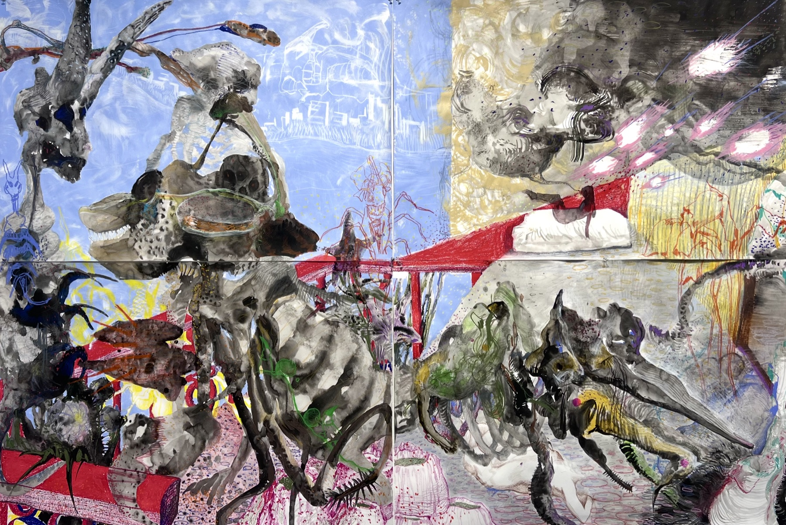
You feel something inside you repeating itself, over and over, the way Sisyphus keeps pushing his boulder. It is genetics, it is inertia, it is gravity — pulling you back toward the earliest, most original version of you. But every day is in fact a new day. Every day you wake up as someone slightly different. Even when the balcony isn't as bright, as beautiful, as fierce and certain as you imagined — because you can't decide the weather — you can still walk into the room and lie down. Let yourself stay there longer than you think you should. Because that room belongs only to you.
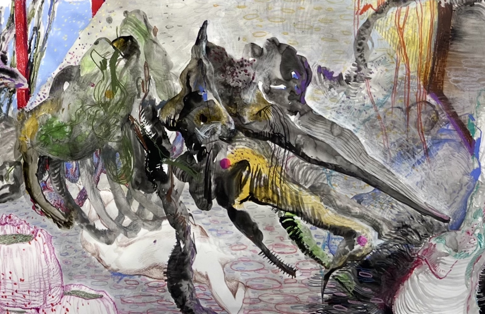
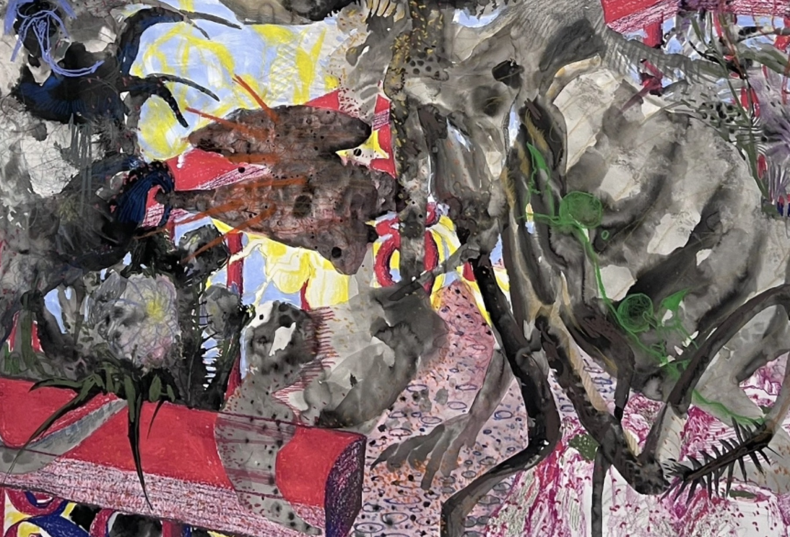
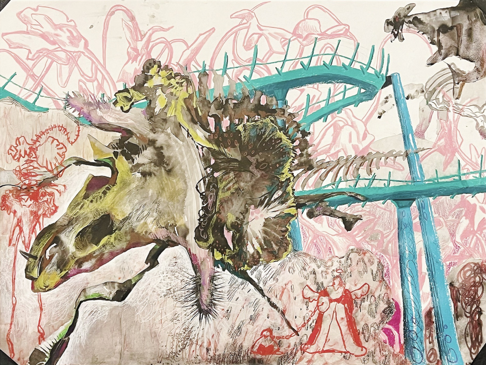
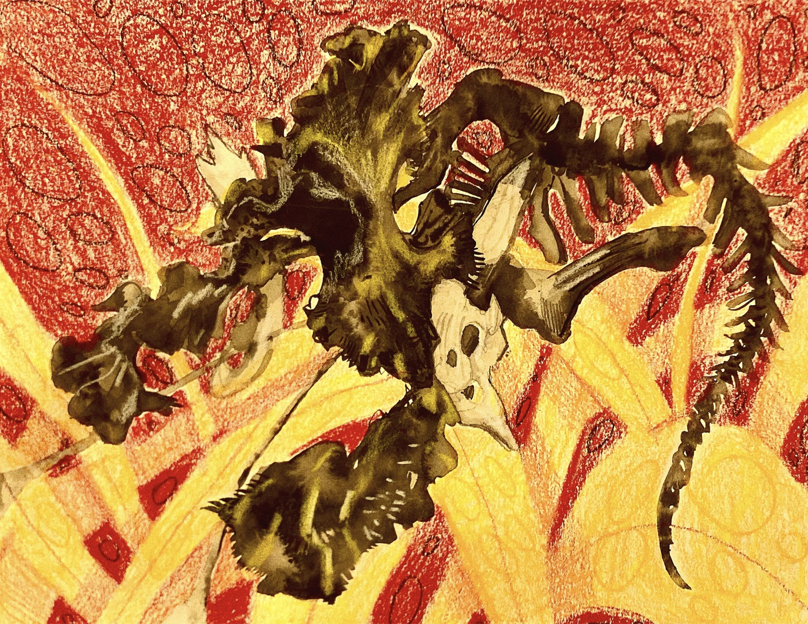
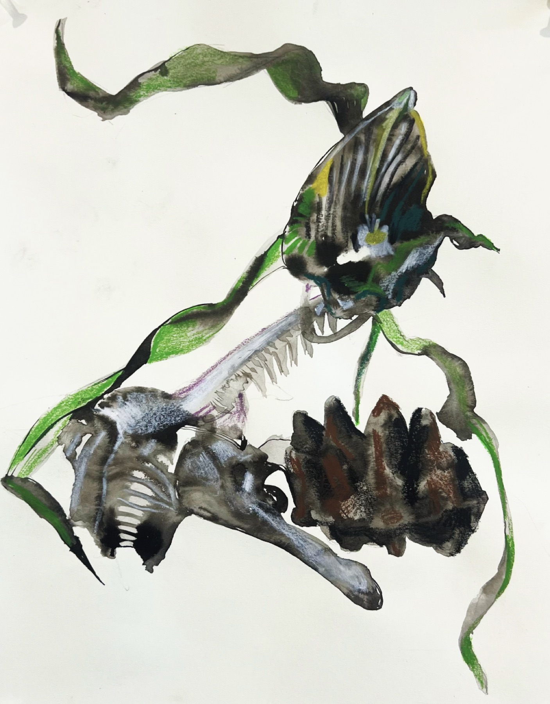
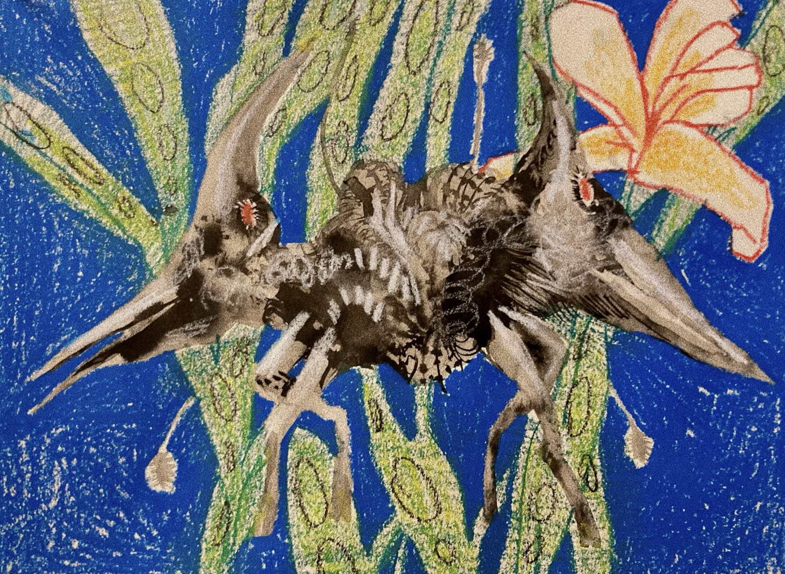
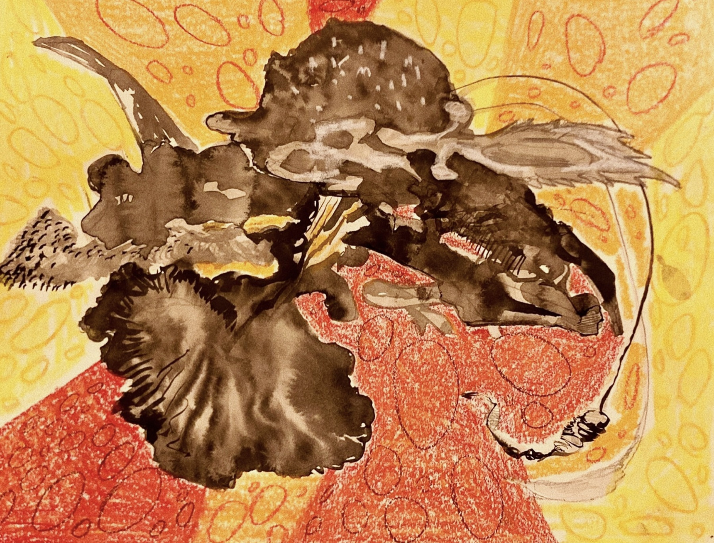
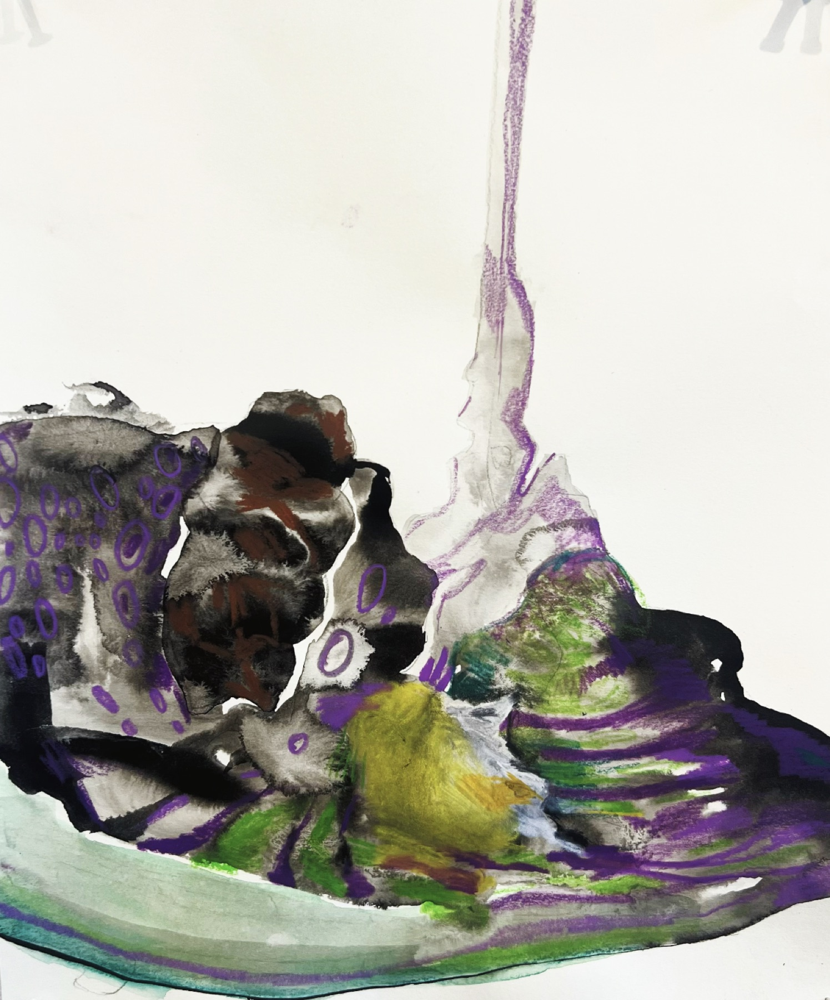
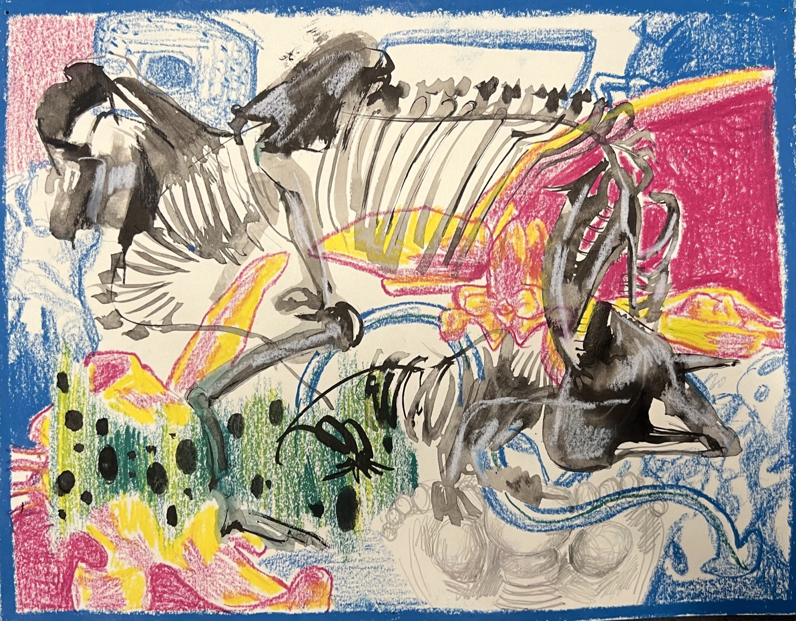
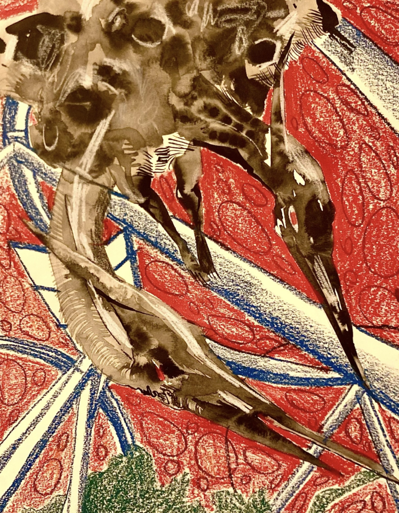
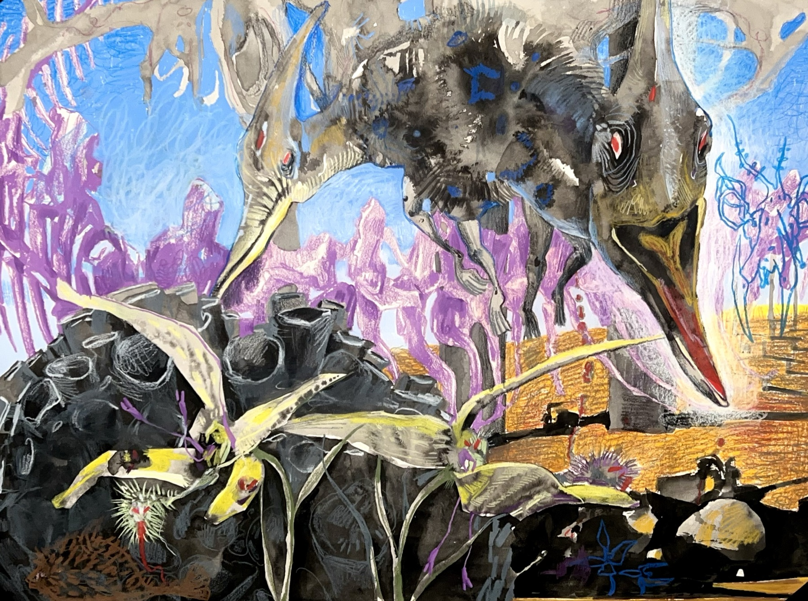
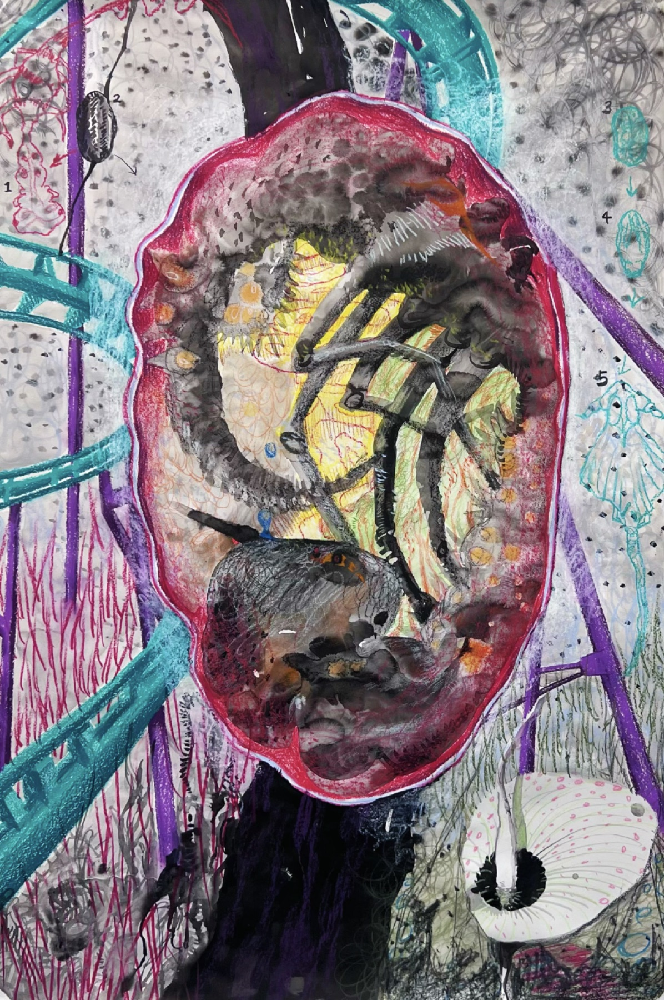